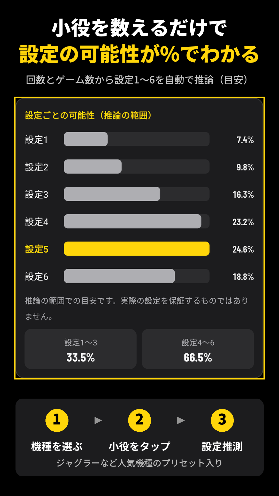

スロット・パチスロの小役をタップで数えるだけで、ゲーム数から確率を表示し、設定推測で設定1〜6の可能性を％とグラフで表示する Android アプリです。ジャグラーのぶどう確率・REG確率・合算確率の確認や、スマスロの設定判別に使えます。

機種名を選ぶと、設定別の小役・ボーナス確率の一覧と数え方のコツを見られます。対応機種の一覧
提供者: PS Tool Factory
表示する値は設定判別の目安であり、結果や設定を保証するものではありません。遊技は18歳以上で、無理のない範囲で楽しんでください。本サイトとアプリは、各機種のメーカー・販売元とは関係のない個人提供のものです。機種名は対応機種を示す目的でのみ記載しています。